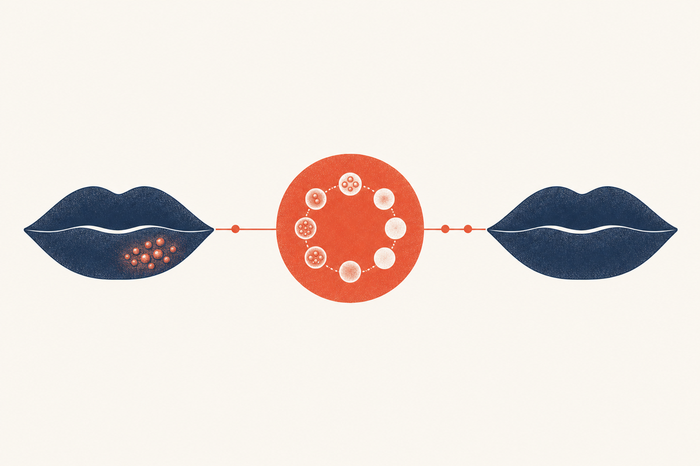

Key Takeaways
- A cold sore follows five stages, tingling, blistering, weeping, crusting, and healing, over roughly 7 to 10 days.[1][2]
- The prodrome (tingling, itching, or burning) typically lasts up to a day or two and is the best moment to start treatment.[6][3]
- The blistering and weeping stages are the most contagious, because the fluid contains abundant live HSV-1.[3][2]
- Oral antivirals started at the tingle are far more effective than the same drug started after blisters have formed.[6][4]
- Crusting does not mean non-infectious; the virus can still be shed until the skin is fully healed.[1][3]
- Most cold sores heal on their own within 7 to 10 days, and up to 14 days in more severe cases.[4]

Stage 1: Tingling (Prodrome)
The first and easiest-to-miss stage is the prodrome. Before any blister appears, usually one to two days earlier, you may feel a localized tingling, itching, burning, or soreness at the spot where the sore is about to form.[1][2] This sensation happens because the dormant virus has just reactivated in the nerve and is traveling back to the skin, where it begins multiplying in the surface cells.[3]
The prodrome is the single most valuable signal in cold sore management. It is the moment when antiviral medication does its best work, because the virus is only beginning to replicate. Multiple trials show that starting an oral antiviral, such as a one-day course of valacyclovir, at this earliest stage shortens the episode more than starting after the blister has formed.[6][4]
People who get frequent cold sores usually learn to recognize their own prodrome, which is often a very specific feeling, a tingle they can identify before anything is visible. If you carry a prescription or can access a same-day telehealth visit, the prodrome is the moment to use it.[6]
Stage 2: Blistering
Over roughly 12 to 48 hours, a group of small, fluid-filled blisters (vesicles) rises in a cluster on the lip, almost always along the border between the lip and the surrounding skin. The cluster is typically red, swollen, and tender, and the individual blisters contain clear fluid that turns cloudy as the episode progresses.[2][3]
The fluid inside these blisters is full of infectious virus, which is why the blistering stage is highly contagious. This is the stage when most people first realize they have a cold sore, and it is also the stage when they are most likely to spread it, through kissing, sharing lip products or utensils, or touching the sore and then touching someone else.[3][8]
During blistering, treatment already becomes less effective than it would have been during the prodrome, but it is still worthwhile. Starting a short-course oral antiviral during the blistering stage can still reduce the size and severity of the outbreak, even if the benefit is less dramatic than treatment at the tingle.[6]
Two caution points apply here. First, do not pick or pop the blisters, which spreads the virus and risks a bacterial infection on top of the viral one.[1] Second, avoid close contact with infants and anyone who is immunocompromised, because for them HSV-1 can be far more serious than a lip sore.[8][7]
Stage 3: Weeping (Ulceration)
The blisters eventually break and merge into a single shallow, open, weeping ulcer. This is often the most painful and most unsightly stage, and it is the peak of contagiousness, because the broken surfaces freely release the virus-laden fluid.[2][3]
The ulcer is shallow and typically does not leave a scar on its own, but it is very sensitive. Eating, drinking, and even talking can be uncomfortable. Keeping the area clean and dry is the main home-care priority at this stage. Some clinicians suggest a cool, damp compress or petroleum jelly to protect the raw skin and keep it from cracking.[1] People who get recurrent cold sores and are planning a lip cosmetic procedure such as filler should discuss antiviral prophylaxis with their provider, because lip trauma can trigger an outbreak.[5]
If a clinician is going to consider prescribing a topical antiviral, the weeping stage is when a cream or ointment is most difficult to keep in place, and this is one practical reason oral therapy is generally preferred for treating an established outbreak.[12][4] The weeping ulcer also risks superinfection with bacteria; if the area develops spreading redness, warmth, or yellow crusted drainage, it should be evaluated.[3]
Stage 4: Crusting (Scabbing)
The weeping ulcer begins to dry and a yellowish or brown crust, or scab, forms over it. Crusting is a sign the body's immune response is gaining control of the infection and the skin is starting to repair itself. This stage commonly lasts several days.[1][2]
People often assume that once a cold sore has crusted it is no longer contagious, but that is not reliable. The virus can still be present at the surface, and the crust can crack and bleed, releasing infectious material. Continue to avoid kissing, sharing items, and touching the sore until the skin has completely healed.[3]
The crust can sting, crack, and itch, and there is a strong urge to pick it. Picking the scab off only reopens the wound, prolongs healing, and can increase the chance of leaving a mark. Keeping the crust moist with petroleum jelly or a lip balm can reduce cracking. Sun protection remains important here, because sun can slow healing and re-trigger recurrence.[1][10]
Stage 5: Healing
The crust flakes away to reveal new, pink skin underneath. The area may remain slightly red, dry, or tender for a few more days after the scab falls off, even though the active infection has essentially resolved. Full healing, meaning normal-looking skin, typically completes the episode in about 7 to 10 days, and up to 14 days in more severe cases.[4][2]
Because HSV-1 establishes lifelong latency in nerve cells, healing is not the same as a cure. The virus simply returns to its dormant state and remains ready to reactivate at a future trigger.[3][7] This is why a previously infected person can have repeated outbreaks in the same area over a lifetime, and why strategies such as sun protection and, for frequent recurrences, daily suppressive therapy matter.[10]
Once the skin is fully healed, the risk of transmitting the virus from that particular lesion is over, though asymptomatic shedding in saliva can always occur. For most people, no further treatment is needed after healing, but those with frequent recurrences may benefit from discussing prevention with a clinician.[3][10]
How Long Does Each Stage Last?
No two cold sores follow an identical clock, but the general shape is consistent. The prodrome is the shortest phase, often under a day. Blistering and weeping occupy the middle of the episode and are when symptoms peak. Crusting is often the longest single phase, and healing tapers off over the final days.[1][4]
| Stage | Typical duration | What it looks/feels like |
|---|---|---|
| Tingling | Up to about 1 to 2 days | Tingle, itch, or burn before anything is visible |
| Blistering | About 1 to 2 days | Cluster of small fluid-filled blisters |
| Weeping | About 1 to 2 days | Blisters rupture into a shallow, oozing ulcer |
| Crusting | About 2 to 4 days | Dry yellowish or brown scab forms |
| Healing | About 2 to 3 days | Scab flakes off, pink new skin remains |
These durations are approximate and can be compressed by early treatment or extended by picking, sun exposure, or a weakened immune system. A cold sore that has not healed after about two weeks, or that keeps worsening, warrants a clinician's evaluation.[3][1]
Why Treating at the Tingle Matters Most
The reason the prodrome is emphasized across cold sore guidance is simple and well documented: antiviral drugs work by blocking viral replication, and the virus replicates most aggressively in the first day of reactivation. Interrupt replication early and the outbreak never reaches its full size. Start late, after the virus has already copied itself many times over, and the drug has less to interrupt.[6][4]
In the valacyclovir cold sore trials, the one-day course (2 grams twice, 12 hours apart) produced its greatest benefit when started during the prodrome or at the very first visible bump, shortening episode duration and speeding healing and pain relief. The same drug started once a well-developed cluster existed still helped, but less.[6] This is why clinicians encourage patients who get frequent cold sores to keep an antiviral available and to recognize and act on their own prodrome, rather than waiting to confirm the diagnosis visually.
If you miss the prodrome, it is still worth treating during the blistering stage. The benefit is smaller but real, and for many people the extra day or two saved is meaningful.[4][9] For a complete discussion of treatment choices, see our guides on getting rid of a cold sore fast and valacyclovir.
When Is a Cold Sore Most Contagious?
Contagiousness tracks the amount of live virus at the surface of the lesion, which rises rapidly after the prodrome and peaks during blistering and weeping, then declines through crusting and healing.[3][2]
| Stage | Relative contagiousness | Why |
|---|---|---|
| Tingling | Moderate | Virus beginning to shed as it reaches the skin |
| Blistering | High | Intact blisters packed with infectious fluid[3] |
| Weeping | Highest | Ruptured surfaces release virus freely[2] |
| Crusting | Declining | Scab reduces but does not eliminate shedding[3] |
| Healing | Low | Skin closes over; risk drops as healing completes |
In practical terms, a cold sore is most likely to spread when the blisters are intact but fluid-filled, and then when they rupture into a weeping ulcer. The risk falls as the lesion crusts, but it does not reliably reach zero until the skin has fully healed over.[3] On top of this, HSV-1 can be shed in saliva even when there is no visible sore at all, which is why most people caught the virus from someone who did not appear to have an active outbreak.[7][4]
During the contagious windows, avoid kissing, sharing anything that touches the mouth, and oral sex, and wash hands after touching the area.[8][1]
How to Care for Each Stage
| Stage | What to do | What to avoid |
|---|---|---|
| Tingling | Start oral antiviral if prescribed; clip nails; note the spot[6] | Waiting to see if it "becomes" a cold sore before acting |
| Blistering | Keep clean and dry; wash hands after touching[1] | Popping or squeezing blisters; kissing; sharing items |
| Weeping | Cool compress; petroleum jelly to protect the raw skin[1] | Picking at the ulcer; harsh or drying products |
| Crusting | Moisturize the scab; use lip sunscreen[10] | Peeling the scab; tanning or prolonged sun |
| Healing | Lip balm with SPF to protect new skin | Assuming it cannot recur; sharing lip product |
Across every stage, the same non-commercial principle applies: most cold sores need only supportive care, and the highest-value intervention, an early oral antiviral, happens once, at the very beginning.
What's Normal and What's Concerning
Most cold sores follow the normal arc and resolve without complication. But certain features should prompt a clinician's evaluation rather than waiting and watching:
- A sore that does not heal within about two weeks, or that keeps enlarging.[3]
- A sore that is unusually large, deep, or spreading beyond the lip onto surrounding facial skin.[8]
- Frequent recurrences (roughly four or more per year) that disrupt your life.[10]
- Any eye redness, pain, or vision change, because HSV can infect the cornea and threaten sight.[1][3]
- Widespread blisters or fever in someone with eczema, which raises concern for eczema herpeticum.[11][8]
If any of these apply, a same-day telehealth or in-person visit can clarify whether you need treatment beyond home care. Most of the time the answer is reassuring, and the guidance is to keep the sore clean, protected, and untreated beyond simple care.[1]
Frequently Asked Questions
References
- Opstelten W, Neven AK, Eekhof J. Treatment and prevention of herpes labialis Canadian Family Physician. 2008;54(12):1683-1687.. PMID 19074705
- Leung AKC, Barankin B. Herpes labialis: an update Recent Patents on Inflammation & Allergy Drug Discovery. 2017;11(2):107-113.. doi:10.2174/1872213X11666171003151717
- Woo SB, Challacombe SJ. Management of recurrent oral herpes simplex infections Oral Surgery, Oral Medicine, Oral Pathology, Oral Radiology, and Endodontology. 2007;103(Suppl):S12.e1-18.. doi:10.1016/j.tripleo.2006.11.004
- Cernik C, Gallina K, Brodell RT. The treatment of herpes simplex infections: an evidence-based review Archives of Internal Medicine. 2008;168(11):1137-1144.. doi:10.1001/archinte.168.11.1137
- Vaghela D, Davies E, Murray G, Convery C, Walker L. Guideline for the management of herpes simplex 1 and cosmetic interventions Journal of Clinical and Aesthetic Dermatology. 2021;14(11 Suppl 1):S11-S14.. PMC8565875
- Spruance SL, Jones TM, Blatter MM, Vargas-Cortes M, Barber J, Hill J, et al. High-dose, short-duration, early valacyclovir therapy for episodic treatment of cold sores: results of two randomized, placebo-controlled, multicenter studies Antimicrobial Agents and Chemotherapy. 2003;47(3):1072-1080.. doi:10.1128/AAC.47.3.1072-1080.2003
- World Health Organization. Herpes simplex virus fact sheet WHO. Updated May 30, 2025.. who.int herpes fact sheet
- Centers for Disease Control and Prevention. Herpes: STI treatment guidelines, 2021 CDC Division of STD Prevention.. cdc.gov herpes treatment guidelines
- Sloan A, Mortezavi M, Gerhart J, Banerjee A, Alami NN, Najera I, et al. Orolabial and genital herpes clinical trials: a meta-analysis of endpoints Open Forum Infectious Diseases. 2026;13:ofaf776.. doi:10.1093/ofid/ofaf776
- Chi CC, Wang SH, Delamere FM, Wojnarowska F, Peters MC, Kanjirath PP. Interventions for prevention of herpes simplex labialis (cold sores on the lips) Cochrane Database of Systematic Reviews. 2015;(8):CD010095.. doi:10.1002/14651858.CD010095.pub2
- Tovaru S, Parlatescu I, Tovaru M, Cionca L, Arduino PG. Recurrent intraoral HSV-1 infection: a retrospective study of 58 immunocompetent patients from Eastern Europe Medicina Oral, Patología Oral y Cirugía Bucal. 2011;16(2):e163-169.. doi:10.4317/medoral.16.e163
- Mancini A, Inchingolo AM, Marinelli G, Trilli I, Sardano R, Pezzolla C, et al. Topical and systemic therapeutic approaches in the treatment of oral herpes simplex virus infection: a systematic review International Journal of Molecular Sciences. 2025;26(17):8490.. doi:10.3390/ijms26178490